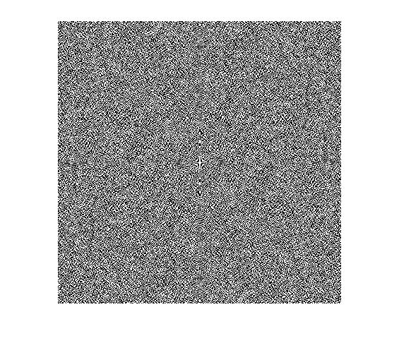
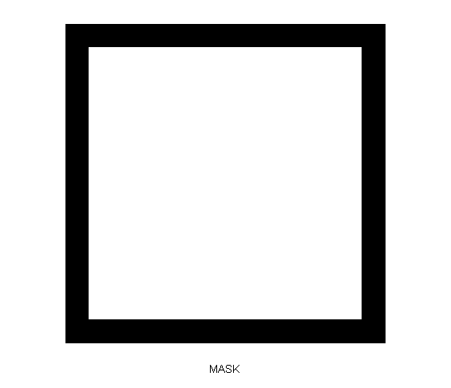
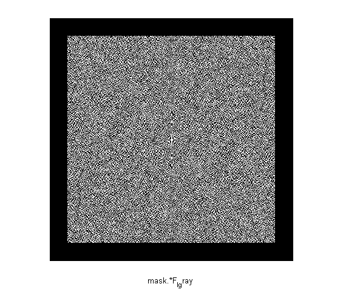
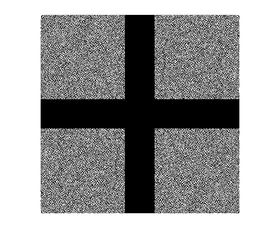
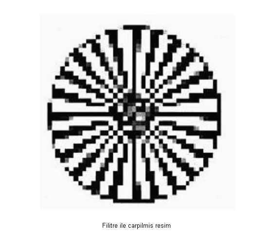

clear
I = imread('round.jpg');
I_resize = imresize(I,[400 400]);
I_gray = rgb2gray(I_resize);
figure
imshow(I_gray)
xlabel({'RESIM'});
F_I_gray = fft2(I_gray);
figure
F_I_gray = fftshift(F_I_gray);
imshow(F_I_gray)
mask1 = ones(400,400);
mask = zeros(400,400);
mask(30:370,30:370) = 1;
figure
imshow(mask)
xlabel({'MASK'});
figure
imshow(mask.*F_I_gray)
xlabel({'mask.*F_I_gray'});
F_I_gray = mask.*F_I_gray;
F_I_gray = fftshift(F_I_gray);
figure
imshow(F_I_gray)
resim2 = ifft2(F_I_gray);
figure
imshow(resim2,[])
xlabel({'Filitre ile carpilmis resim'});
Warning: Displaying real part
of complex input.
Warning: Displaying real part
of complex input.
Warning: Displaying real part
of complex input.
Warning: Displaying real part
of complex input.
    